Vi vu Valley of Love 2025 – Chốn Mộng Mơ Giữa Đà Lạt
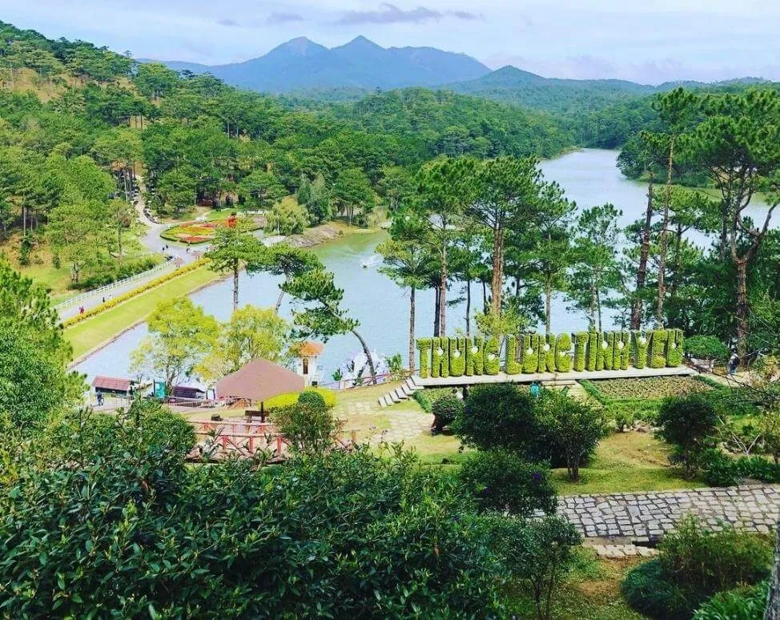
Table of Contents
- 1. Valley of Love – Biểu Tượng Cảnh Quan Đặc Sắc Của Đà Lạt
- 2. Bản đồ Valley of Love Đà Lạt: Khám phá 3 khu vực prominent
-
3. Valley of Love có gì? – 1001 interesting experience you shouldn't miss
- 3.1. Ngắm cảnh valley bằng xe điện
- 3.2. Trải nghiệm cầu kính 7D
- 3.3. Sống ảo thả ga với hàng trăm tiểu cảnh
- 3.4. Khám phá khu mô hình 30 kỳ quan thế giới
- 3.5. Đạp vịt thư giãn trên hồ Đa Thiện
- 3.6. Tham quan Đồi Mộng Mơ rực rỡ sắc hoa
- 3.7. Thử thách tình yêu tại Mê cung cây lớn nhất Việt Nam
- 3.8. Thưởng thức văn hóa Cồng Chiêng Tây Nguyên
- 4. Gợi ý cuisine gần Valley of Love
Valley of Love không đơn thuần là một destination visit/explore mà đã trở thành icon/symbol đặc trưng của Đà Lạt – the City of a Thousand Flowers. With khung cảnh poetic, ambiance dịu nhẹ quanh năm, nơi đây luôn là điểm dừng chân ideal để thư giãn, nghỉ dưỡng và enjoy những khoảnh khắc an yên bên thiên nhiên.
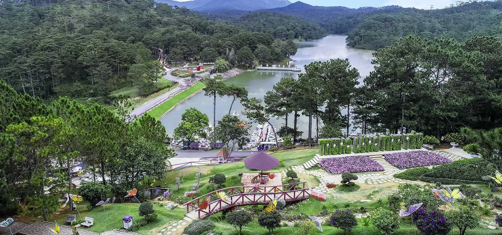
Sở hữu beauty đặc trưng của núi rừng Tây Nguyên, Valley of Love gây impressive mạnh với visitors bởi lake yên ả, pine forest trải dài và những đồi hoa rực rỡ. Mỗi góc tại đây đều có thể trở thành background stunning cho những bức ảnh check-in “triệu tim”. Đó cũng chính là lý do vì sao nơi này luôn nằm trong danh sách những location you shouldn't miss khi du lịch Đà Lạt.
1. Valley of Love – Biểu Tượng Cảnh Quan Đặc Sắc Của Đà Lạt
1.1. Địa chỉ, hours mở cửa và giá vé visit/explore Valley of Love
- Address: Số 3 – 5 – 7, đường Mai Anh Đào, phường 8, thành phố Đà Lạt
- Giờ hoạt động: Từ 7h30 sáng đến 17h00 hằng ngày
Khi mua vé vào cổng tourist area Valley of Love, visitors sẽ được trải nghiệm trọn gói nhiều service hấp dẫn như: đi xe điện stroll around khuôn viên, đạp xe, tàu lửa visit/explore, enjoy buffet, xem chương trình giao lưu văn hóa cồng chiêng và tham gia các trò chơi dân gian thú vị.
Bảng giá vé Valley of Love Đà Lạt (cập nhật mới nhất):
| Loại vé | Người lớn | Trẻ em | Người trên 60 tuổi |
|---|---|---|---|
| Vé visit/explore | 250.000 VNĐ | 125.000 VNĐ | 125.000 VNĐ |
| Combo vé visit/explore + buffet | 360.000 VNĐ | 280.000 VNĐ | 280.000 VNĐ |
| Combo vé visit/explore + ăn sáng | 320.000 VNĐ | 250.000 VNĐ | 250.000 VNĐ |
Lưu ý: Giá vé có thể thay đổi tùy thời điểm, nên visitors nên kiểm tra trước khi đến để có itinerary suitable.
1.2. Đường đi Valley of Love Đà Lạt
Việc di chuyển đến Valley of Love khá đơn giản nhờ vào hệ thống đường sá convenient và vị trí gần trung tâm thành phố Đà Lạt. Từ Xuan Huong Lake, bạn chỉ takes about 7km để đến nơi, theo hướng Bắc thành phố.
- Hướng dẫn di chuyển:
-
- From the center, bạn đi theo đường Đinh Tiên Hoàng, khoảng 1km sẽ đến Ngã 5 Đại học Đà Lạt.
- Tại đây, rẽ vào đường Phù Đổng Thiên Vương và tiếp tục đi thẳng khoảng 3.5km là đến đường Mai Anh Đào, nơi tọa lạc của Valley of Love.
- Du khách có thể chọn các phương tiện di chuyển suitable như:
-
- Xe máy: linh hoạt và dễ dừng lại enjoy the scenery
- Taxi/Grab: tiện lợi, thích hợp với nhóm đông people
- Ô tô cá nhân: nếu bạn đi theo gia đình
1.3. Why Is It Called “Valley of Love”?
Valley of Love not only đẹp but also mang trong mình câu chuyện lịch sử thú vị. Thời Pháp thuộc, nhờ khí hậu ôn hòa, địa hình poetic, nơi đây từng là điểm hẹn hò yêu thích của giới quý tộc Pháp.
Đến thời Vua Bảo Đại, địa danh này được đổi tên thành “Thung Lũng Hòa Bình” nhằm thể hiện mong muốn hòa hợp. However, vào năm 1953, chính quyền địa phương quyết định đặt tên mới là “Valley of Love”, nhằm khẳng định giá trị Việt hóa và tôn vinh beauty romantic vốn có của nơi này.

Ngày nay, cái tên “Valley of Love” đã trở thành một icon/symbol prominent của Đà Lạt. Địa danh này còn được dịch sang tiếng Anh là “The Valley of Love”, mang tính quốc tế và attracts a large number of visitors nước ngoài.
1.4. The Beauty of poetic của Valley of Love
Valley of Love gây impressive mạnh bởi beauty tự nhiên nhẹ nhàng, tranquil. Hồ nước xanh ngọc, những con suối róc rách, pine hills trải dài và khuôn viên Đồi Mộng Mơ chính là điểm nhấn cho atmosphere nơi đây.
Du khách có thể discover cảnh sắc poetic của valley qua nhiều hình thức:
- Xe jeep hoặc train mini để trải nghiệm toàn cảnh
- Đi bộ dọc theo hồ, pine forest để enjoy sự bình yên
- Tự check-in tại nhiều tiểu cảnh romantic, được thiết kế công phu
With sự kết hợp giữa beauty thiên nhiên và bàn tay con people, Valley of Love luôn là destination không thể thiếu trong hành trình discover Đà Lạt.
2. Bản đồ Valley of Love Đà Lạt: Khám phá 3 khu vực prominent
Để chuyến visit/explore tại Valley of Love Đà Lạt thêm complete/perfect và convenient, việc nắm rõ bản đồ phân khu là điều rất cần thiết. Tourist Area được chia thành 3 khu vực chính, mỗi nơi đều mang nét unique riêng, giúp bạn dễ dàng lên itinerary discover hợp lý.
2.1. Khu vực trung tâm – Trái tim của Valley of Love
Đây là khu vực đầu tiên mà visitors sẽ đặt chân đến khi vừa vào cổng tourist area. Tại đây có nhiều atmosphere được thiết kế tinh tế để check-in Instagrammable, cùng với các phòng trưng bày nghệ thuật hấp dẫn.
- Các café, nước giải khát nằm rải rác giúp you can dừng chân thư giãn giữa hành trình.
- Khu vực còn có các trò chơi nhẹ nhàng, thích hợp cho cả adults và trẻ nhỏ.
- Du khách có thể dễ dàng mua vé, lấy bản đồ hướng dẫn, và nhận tư vấn ngay tại trung tâm.
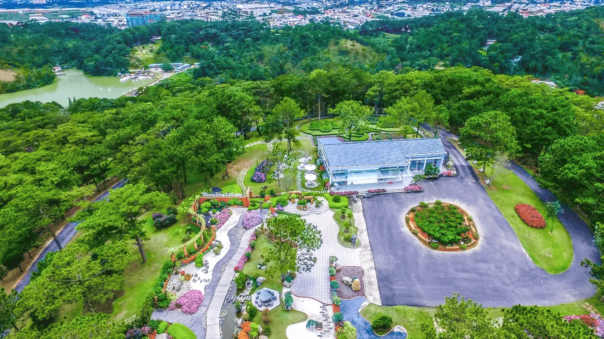
2.2. Khu vực Hồ Đa Thiện – The Beauty of tranquil giữa lòng valley
Tiếp tục hành trình từ trung tâm, bạn chỉ cần đi thêm một đoạn là sẽ đến Hồ Đa Thiện – nơi được ví như viên ngọc xanh của Valley of Love. Tại đây, you can tham gia các hoạt động hấp dẫn như:
- Đạp vịt trên hồ – trải nghiệm romantic cho các cặp đôi.
- Cưỡi ngựa stroll around hồ – thích hợp cho cả adults lẫn children.
- Tản bộ thư giãn dưới tán cây thông mát rượi.
Không gian ở Hồ Đa Thiện rất thích hợp để enjoy sự bình yên và enjoy the scenery thiên nhiên stunning.
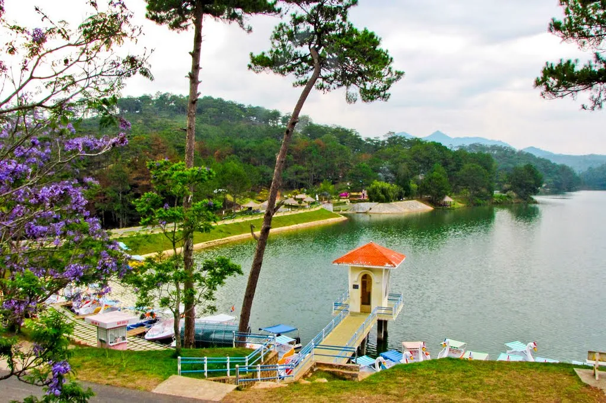
2.3. Khu vực Đồi Vọng Cảnh – Điểm dừng chân ideal để vui chơi và thư giãn
Nằm ở khu vực cao nhất trong tourist area, Đồi Vọng Cảnh là nơi được nhiều visitors yêu thích bởi atmosphere spacious và khung cảnh nên thơ.
- Đây là nơi enjoy the scenery ideal, cho bạn tầm nhìn bao quát toàn bộ valley.
- Nhiều trò chơi vận động và giải trí được bố trí tại đây, suitable cho nhóm bạn hoặc gia đình muốn có những minutes giây vui vẻ.
- Vào những ngày đẹp trời, you can bắt gặp những tia nắng vàng chiếu rọi qua tán thông, tạo nên khung cảnh vô cùng romantic.
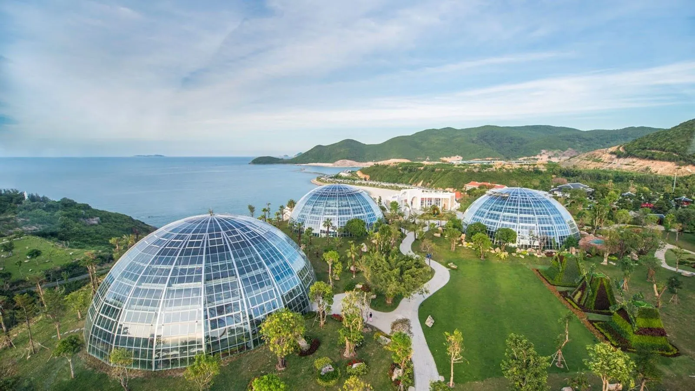
3. Valley of Love có gì? – 1001 interesting experience you shouldn't miss
Not only prominent với khung cảnh thiên nhiên poetic, Valley of Love Đà Lạt còn mang đến hàng loạt hoạt động hấp dẫn cho mọi lứa tuổi. Nếu bạn đang băn khoăn “Valley of Love có gì chơi?”, thì dưới đây là những trải nghiệm distinctive mà bạn nhất định không nên bỏ qua.
3.1. Ngắm cảnh valley bằng xe điện
Một trong những hoạt động đầu tiên khi đến tourist area là vi vu bằng xe điện. With diện tích rộng lớn, di chuyển bằng xe điện not only giúp tiết kiệm sức but also là cách ideal để bạn chiêm ngưỡng toàn cảnh valley trong ambiance trong lành, cool and refreshing. Vé xe điện đã được bao gồm trong vé vào cổng, nên you can thoải mái enjoy.
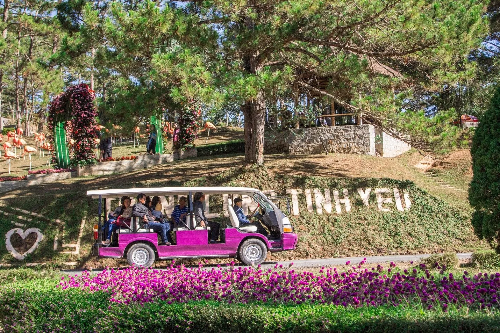
3.2. Trải nghiệm cầu kính 7D
Một điểm nhấn đang được mong đợi chính là cầu kính 7D modern, nối liền giữa Đồi Mộng Mơ và Mê cung tình yêu. Đây sẽ là cây cầu đáy kính đầu tiên tại khu vực miền Trung – Tây Nguyên, ứng dụng công nghệ hình ảnh sống động, hứa hẹn mang đến cảm giác “thót tim” cực đã và những bức ảnh check-in đầy impressive.
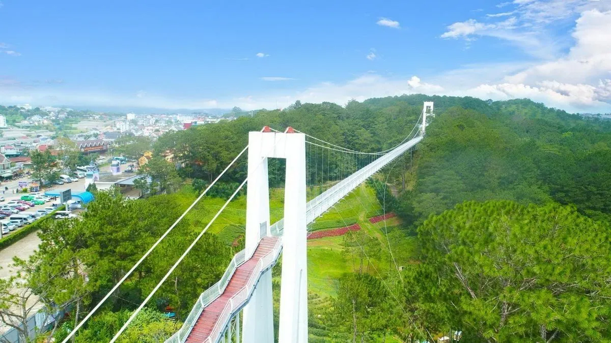
3.3. Sống ảo thả ga với hàng trăm tiểu cảnh
Valley of Love như một phim trường ngoài trời với vô vàn tiểu cảnh sáng tạo, cho bạn thỏa sức tạo dáng và lưu giữ những khoảnh khắc unique. Một số tiểu cảnh prominent có thể kể đến như:
- Thành phố cổ châu Âu
- Vườn nhiệt đới xanh mát
- Tiểu cảnh bàn cờ khổng lồ
- Cổng tình yêu, lâu đài cổ tích, hồ hoa romantic
Dù bạn đi cùng people thương, gia đình hay nhóm bạn thì nơi đây đều mang đến bối cảnh ideal để “cháy máy”.
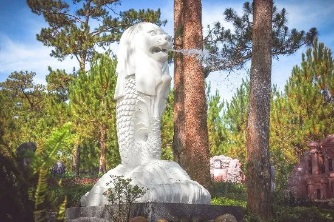
3.4. Khám phá khu mô hình 30 kỳ quan thế giới
Bạn có từng mơ ước được đặt chân đến những công trình nổi tiếng như Vạn Lý Trường Thành, Đấu Trường La Mã hay Tháp nghiêng Pisa? Ngay tại Valley of Love, you can chiêm ngưỡng hơn 30 kỳ quan nổi tiếng của thế giới qua các phiên bản thu nhỏ được thiết kế tinh xảo và sống động. Góc chụp từ xa còn khiến bạn ngỡ như đang đứng giữa thế giới thực.
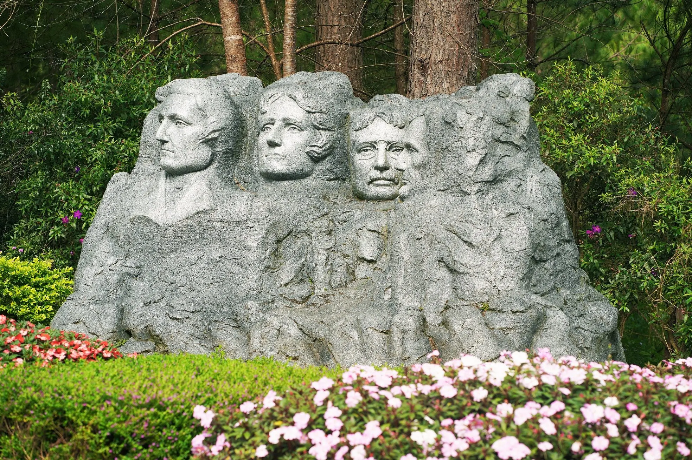
3.5. Đạp vịt thư giãn trên hồ Đa Thiện
Hồ Đa Thiện – viên ngọc xanh giữa pine forest – là location ideal để bạn đạp vịt thư giãn, especially vào in the afternoon lộng gió. Vừa đạp vịt, vừa enjoy ambiance trong lành và phong cảnh romantic, đây là một trải nghiệm rất được các cặp đôi và gia đình yêu thích.
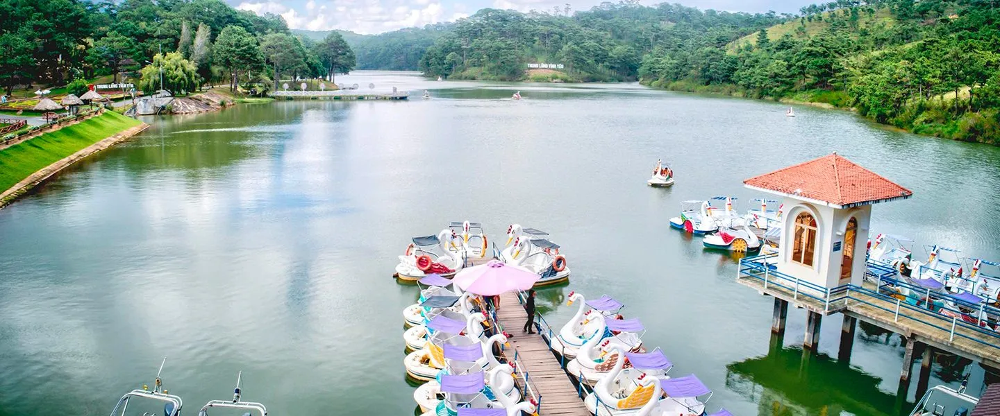
3.6. Tham quan Đồi Mộng Mơ rực rỡ sắc hoa
Ngay trong khuôn viên Valley of Love, you can visit Đồi Mộng Mơ – nơi prominent với những thảm hoa khoe sắc quanh năm. Especially, mùa cẩm tú cầu nở rộ sẽ khiến bạn không thể rời mắt khỏi những cánh đồng xanh tím dreamy. Đây cũng là location được các tín đồ Instagrammable “săn lùng” nhiều nhất.
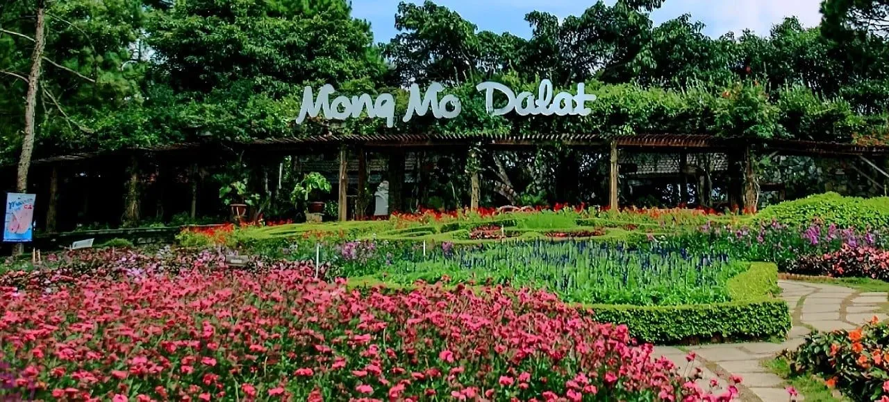
3.7. Thử thách tình yêu tại Mê cung cây lớn nhất Việt Nam
Một trải nghiệm đầy thú vị và ý nghĩa dành cho các cặp đôi là chinh phục Mê cung tình yêu. Được tạo nên từ hàng ngàn bụi cây xanh cắt tỉa cầu kỳ, mê cung này là công trình unique nhất Việt Nam. Cùng nắm tay nhau vượt qua các lối đi quanh co chắc chắn sẽ là kỷ niệm đáng nhớ trong hành trình của bạn và people thương.
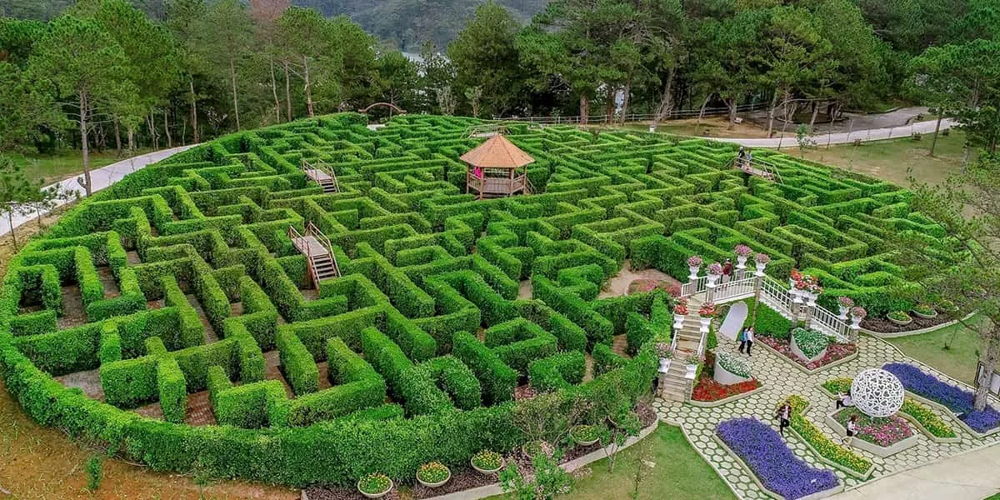
3.8. Thưởng thức văn hóa Cồng Chiêng Tây Nguyên
Not only có beautiful scenery, Valley of Love còn là nơi lưu giữ những giá trị văn hóa đặc trưng. Tại sân khấu Cồng Chiêng Tây Nguyên nằm trong khu Đồi Mộng Mơ, bạn sẽ được enjoy những tiết mục biểu diễn traditional với âm thanh cồng chiêng, đàn đá, tiếng khèn, điệu múa… trong atmosphere huyền bí, trầm mặc của núi rừng. Sân khấu có sức chứa đến 1.500 people, được thiết kế mô phỏng kiến trúc rẻ quạt unique.
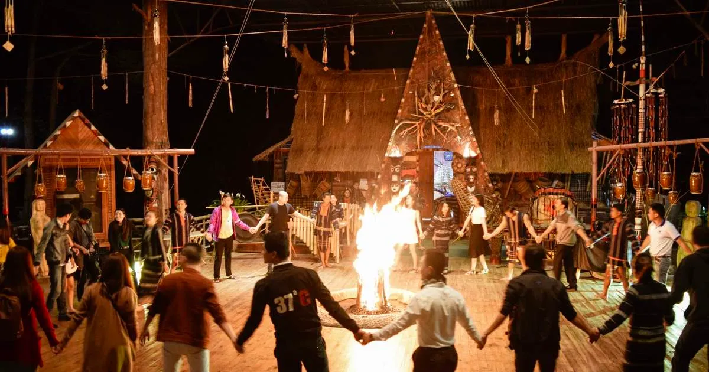
4. Gợi ý cuisine gần Valley of Love
Sau một ngày dạo chơi, discover complete/perfect những điều thú vị tại Valley of Love Đà Lạt, don't forget ghé Tiệm Nướng & Chill Xóm Lèo – BBQ restaurant Đà Lạt được yêu thích not only bởi menu hấp dẫn but also bởi atmosphere ấm cúng, gần gũi giữa thiên nhiên xanh mát. Tại đây, bạn sẽ được enjoy những grilled dishes thơm lừng trong khung cảnh chilly đặc trưng của phố núi, vừa ấm lòng vừa chill đúng điệu.
Dù đi cùng people thương, bạn bè hay gia đình, Tiệm Nướng & Chill Xóm Lèo luôn là lựa chọn ideal để kết thúc một ngày rong chơi thật complete/perfect. Cùng nhâm nhi vài món ngon, hít hà chút khí trời, trò chuyện rôm rả bên bếp lửa hồng – đó chính là trải nghiệm cuisine Đà Lạt đầy cảm xúc mà bạn không nên bỏ lỡ!

📌 Address: 113 Huỳnh Tấn Phát, Phường 11, Đà Lạt, Lâm Đồng 67000
📌 Inbox: m.me/nuongxomleo
📌 Google Maps: Get Directions
📌 Hotline: 076.45.27.336 – 08.99.42.84.34 – 0902.91.22.40
Valley Tình Yêu là destination you can't miss khi bạn visit Đà Lạt. With cảnh quan poetic, ambiance trong lành và nhiều hoạt động thú vị, nơi đây hứa hẹn mang đến cho bạn những trải nghiệm đáng nhớ. Don't forget ghé qua Tiệm Nướng & Chill Xóm Lèo để hoàn thiện hành trình discover Đà Lạt của bạn. Wish you có một trip thật complete/perfect và đáng nhớ!